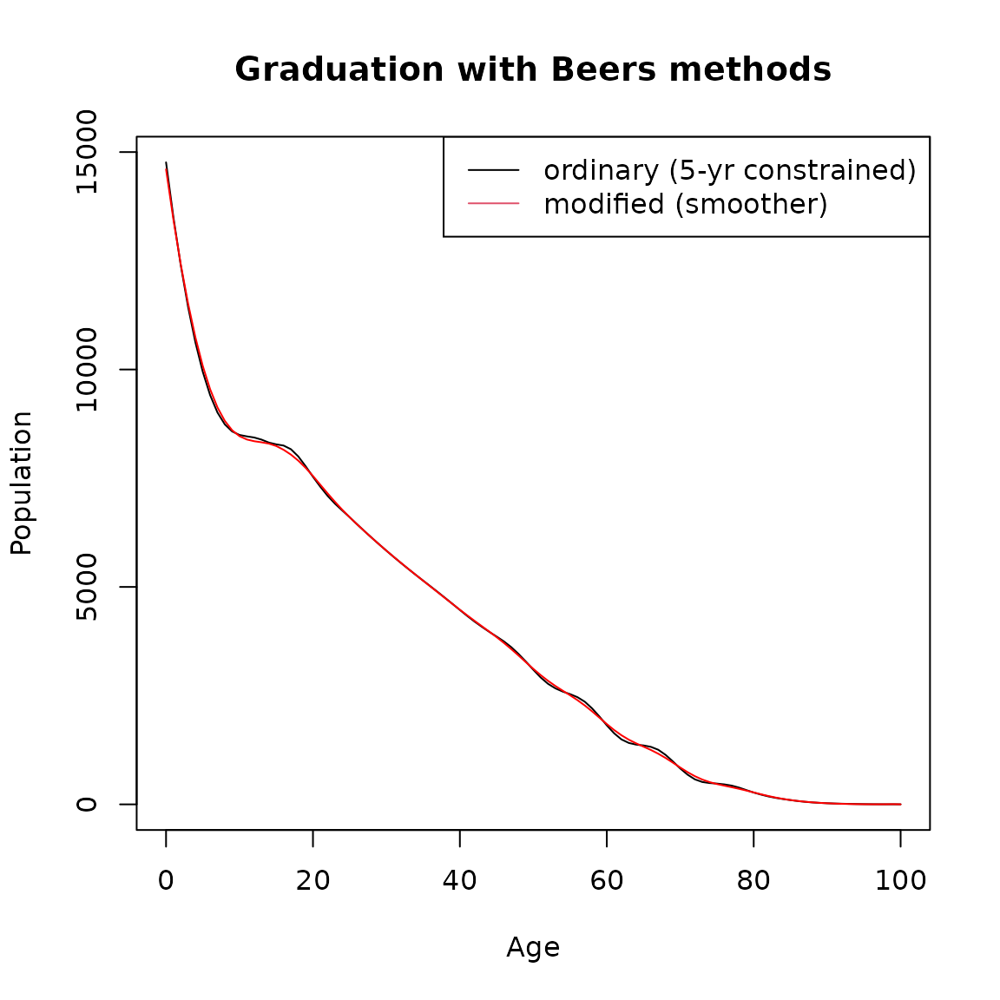

Graduation with DemoTools
José Manuel Aburto, Ilya Kashnitsky, Monica Alexander, Jorge Cimentada, Tim Riffe
2019-12-03
graduation_with_demotools.Rmd
How to use DemoTools to graduate counts in grouped ages
What is graduation?
Graduation is a practice used to derive figures for n-year age groups, for example 5-year age groups from census data, that are corrected for net reporting error (Siegel Jacob and Swanson David 2004). The basic idea is to fit different curves to the original n-year and redistribute them into single-year values. These techniques are designed so that the sum of the interpolated single-year values is consistent with the total for the groups as a whole. Among the major graduation methods are the Sprague (Sprague 1880) and Beers (H. Beers 1945) oscilatory methods, monotone spline and the uniform distribution. More recently, the penalized composite link model (pclm) was proposed to ungroup coarsely aggregated data (Rizzi, Gampe, and Eilers 2015). All of these methodologies are implemented in DemoTools.
Why graduate?
One of the main purposes of graduation is to refine the detail of available data in published statistics or surveys. This allows to estimate numbers of persons in single years of age from data originally in 5-year age groups. In practice, graduation of mortality curves has been very important to estimate reliable life tables, but also in fertility studies graduation is useful for the analysis of data from populations where demographic records are defective (Brass 1960).
How is this different from smoothing?
The main difference between graduation and smoothing is that graduation redistributes the counts or events into single-year age groups with the constrain that they sum to the original total. The selection of the method to be used depends mostly on the balance between smoothness and closeness of fit to the data. Therefore, the analyst must decide which weight should be given to these two opposing considerations.
Methods choices
Sprague
Sprague (1880) suggested the fifth-difference method based on one equation that depends on two polynomials of degree four forced to have a common ordinate, tangent and radius of curvature at \(Y_{n+2}\) and at \(Y_{n+3}\):
\[\begin{equation*} y_{n+2+x} = \frac{(x+2)}{1!}\Delta y_n + \frac{(x+2)(x+1)}{2!}\Delta y^2_n + \frac{(x+2)(x+1)x}{3!}\Delta y^3_n + \frac{(x+2)(x+1)(x-1)x}{4!}\Delta y^4_n + \frac{x^3(x-1)(5x-7)}{4!}\Delta y^5_n \end{equation*}\]
There are six observations \(Y_{n},Y_{n+1},Y_{n+2},Y_{n+3},Y_{n+4}\) and \(Y_{n+5}\) involved in the leading differences, $y_{n},,^5 y_n $. The interpolated points fall on curves that pass through the given points, and the interpolated subdivisions add up to the data in the original groups. To implement this method in DemoTools, use the function graduate with the option for method specified as sprague.
sprague <- graduate(Value, Age, method = "sprague")
single.age <- names2age(sprague)
plot(single.age, sprague, type = 'l',
ylab = 'Population',
xlab = 'Age',
main = 'Graduation with Sprague method')
Beers
Following a similar idea, Beers interpolated two overlapping curves minimizing the squares of the differences within the interpolation range (H. Beers 1945). Specifically, Beers did this by minimizing fifth differences for a six-term formula, refered to as the ‘Ordinary’ Beers method (H. S. Beers 1945). Subsequently, the ordinay formula was modified to relax the requirement that the given value be reproduced and yield smoother interpolated results, refered to as ‘Modified’ Beers method (H. Beers 1945).
beers.ordinary <- graduate(Value, Age, method = "beers(ord)")
beers.modified <- graduate(Value, Age, method = "beers(mod)")
single.age <- names2age(beers.ordinary)
plot(single.age, beers.ordinary, type = 'l',
ylab = 'Population',
xlab = 'Age',
main = 'Graduation with Beers methods')
lines(single.age,beers.modified, col = "red")
legend("topright",lty=1,col=c(1,2),legend=c("ordinary (5-yr constrained)",
"modified (smoother)"))
Monotone spline
Graduation by a monotone spline is another option available in DemoTools. This option offers an algorithm to produce interpolants that preserve properties such as monotonicity or convexity that are present in the data (Fritsch and Carlson 1980). These are desirable conditions to not introduce biased details that cannot be ascertained from the data (Hyman 1983). To run this algorithm in DemoTools the option mono should be selected as follows:
mono.grad <- graduate(Value, Age, method = "mono")
single.age <- names2age(mono.grad)
plot(single.age, mono.grad, type = 'l',
ylab = 'Population',
xlab = 'Age',
main = 'Graduation with monotone spline')
PCLM
The pclm option in DemoTools ungroups data assuming the counts are distributed Poisson over a smooth grid (Pascariu et al. 2018). The grouped data can be efficiently ungrouped by using the penalized composite link model (Rizzi, Gampe, and Eilers 2015). This method is a flexible choice since the only assumption underlying the model is smoothness, which is usually met with demographic counts. For more details see Rizzi, Gampe, and Eilers (2015) and the ungroup package in R.
pclm.grad <- graduate(Value, Age, method = "pclm")
single.age <- names2age(pclm.grad)
plot(single.age, pclm.grad, type = 'l',
ylab = 'Population',
xlab = 'Age',
main = 'Graduation with pclm')
Uniform
With the uniform option graduation is performed assuming that the counts are uniformly distributed across each age interval. It is also assumed that the initial age intervals are integers greater than or equal to one. This option simply splits aggregate counts in age-groups into single age groups.
unif.grad <- graduate(Value, Age, method = "unif")
single.age <- names2age(unif.grad)
plot(single.age, unif.grad, type = 'l',
ylab = 'Population',
xlab = 'Age',
main = 'Graduation with uniform distribution')
Comparison of all methods
plot(single.age, beers.ordinary, type = 'l',
ylab = 'Population',
xlab = 'Age',
main = 'Graduation with multiple methods')
lines(single.age,beers.modified, col = "red")
lines(single.age,sprague, col = "blue")
lines(single.age,mono.grad, col = "green")
lines(single.age,pclm.grad, col = "pink")
lines(single.age,unif.grad, col = "magenta")
legend("topright",
lty=1,
col=c('black','red','blue','green','pink','magenta'),
legend=c("Beers ordinary",
"Beers modified",'Sprague','Monotone','PCLM',
'Uniform'))Using a standard
The function rescaleAgeGroups rescales a vector of counts in some given age-groups to approximate the counts into different age grouping. This method is appealing when, for example, the user wants to rescale single ages to sum to 5-year age groups. It is particularly useful in processes of making consistent different datasets to provide the same structure of data prior to construction of a lifetable for example.
To do: TR: rescaleAgeGroups() I’m, not sure. How about you get DemoData death or pop counts from an HMD country and in single ages from Jorge. Then rescale them to match HMD counts in 5-year age groups? Just an idea.
AgeIntRandom <- c(1L, 5L, 2L, 2L, 4L, 4L, 1L, 2L, 3L, 4L, 3L, 3L, 3L, 3L, 5L)
AgeInt5 <- rep(5, 9)
original <- runif(45, min = 0, max = 100)
pop1 <- groupAges(original, 0:45, AgeN = int2ageN(AgeIntRandom, FALSE))
pop2 <- groupAges(original, 0:45, AgeN = int2ageN(AgeInt5, FALSE))
# inflate (in this case) pop2
perturb <- runif(length(pop2), min = 1.05, max = 1.2)
pop2 <- pop2 * perturb
# a recursively constrained solution
pop1resc <- rescaleAgeGroups(Value1 = pop1,
AgeInt1 = AgeIntRandom,
Value2 = pop2,
AgeInt2 = AgeInt5,
splitfun = splitUniform,
recursive = TRUE)
pop1resc
#> 0 1 6 8 10 14 18 19
#> 47.48731 203.73188 197.13624 174.34848 171.93361 278.66414 51.76752 53.19301
#> 21 24 28 31 34 37 40
#> 70.40811 279.27498 224.26493 67.63843 96.09047 212.41364 246.02403Graduation as a light smoother
The graduation family functions graduate work strictly with data in 5-year age groups. Therefore, graduation can be seen as a light smoother when dealing with counts that are not grouped in 5-year age groups. In order to graduate counts that are not in 5-year age groups, an additional step to do this is necessary prior to graduation. For example, if counts are reported in single age groups, then before graduating the user needs to groups them in 5-year age groups, which can be interpreted as a constrained smooth. Compared with the agesmth family of functions, in this case there would not be transfers between 5-year age groups.
References
Beers, Henry S. 1945. “Six-Term Formulas for Routine Actuarial Interpolation.” The Record of the American Institute of Actuaries 34 (69): 59–60.
Beers, HS. 1945. “Modified-Interpolation Formulas That Minimize Fourth Differences.” Record of the American Institute of Actuaries 34 (69): 14–20.
Brass, William. 1960. “The Graduation of Fertility Distributions by Polynomial Functions.” Population Studies 14 (2). Taylor & Francis: 148–62.
Fritsch, Frederick N, and Ralph E Carlson. 1980. “Monotone Piecewise Cubic Interpolation.” SIAM Journal on Numerical Analysis 17 (2). SIAM: 238–46.
Hyman, James M. 1983. “Accurate Monotonicity Preserving Cubic Interpolation.” SIAM Journal on Scientific and Statistical Computing 4 (4). SIAM: 645–54.
Pascariu, Marius D, Maciej J Dańko, Jonas Schöley, and Silvia Rizzi. 2018. “Ungroup: An R Package for Efficient Estimation of Smooth Distributions from Coarsely Binned Data.” Age 10: 0.
Rizzi, Silvia, Jutta Gampe, and Paul HC Eilers. 2015. “Efficient Estimation of Smooth Distributions from Coarsely Grouped Data.” American Journal of Epidemiology 182 (2). Oxford University Press: 138–47.
Siegel Jacob, S, and A Swanson David, eds. 2004. The Methods and Materials of Demography. 2nd ed. San Diego, USA: Elsevier Academic Press, California, USA.
Sprague, Thomas Bond. 1880. “Explanation of a New Formula for Interpolation.” Journal of the Institute of Actuaries 22 (4). Cambridge University Press: 270–85.